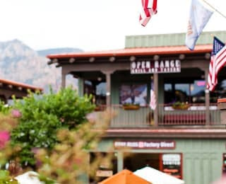
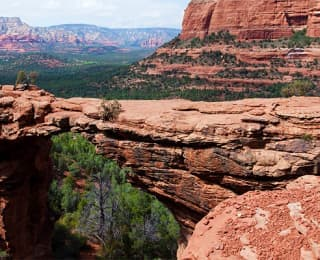

Добро пожаловать в Седону.

Седона — небольшой городок в Аризоне, заслуживающий большего!
Рассмотрим 5 причин, по которым Седона круче, чем Гранд-Каньон!
Преимущества города Седона.
Настоящий городок
— №1 —
Седона не аттракцион для туристов, там течёт своя жизнь
 Жильё
Рекомендуем пожить в настоящем мотеле, всё как в кино!
Еда
Всегда заказывайте фирменный бургер, вы не разочаруетесь!
Сувениры
Не только китайского, но и местного производства!
Там есть мост дьявола
— №2 —
Да, по нему можно пройти! Если вы осмелитесь, конечно
 Небольшая площадь
— №3 —
Все интересные места находятся очень близко
Красивая дорога
— №4 —
Ехать в Седону из Лас‑Вегаса совсем не скучно!
Мало туристов
— №5 —
Большинство едет в Гранд Каньон и толпится там
Заинтересовались?
Укажите предполагаемые даты поездки, и мы покажем вам лучшие предложения гостиниц в Седоне
Найти гостиницу